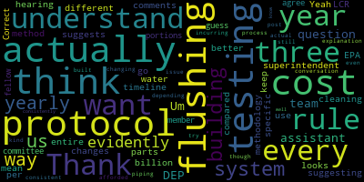

AI-generated transcript of 10.21.2024 - Regular MSC Meeting
English | español | português | 中国人 | kreyol ayisyen | tiếng việt | ខ្មែរ | русский | عربي | 한국인
Back to all transcripts
[Lungo-Koehn]: reports of subcommittee. Chair Graham, would you like to report out yet or do you want to also table that? Okay. Member Graham.
[Graham]: Thank you. A couple of quick notes for everyone. We had our first strategic capital planning meeting around this capital plan specifically last week. We have another meeting scheduled for November 19th to finish the draft of the capital plan. And after that in December, we will have a committee of the whole scheduled. All of those meetings are Zoom only. And we in December will have a capital plan for this group to work through, ask questions about and prioritize so that we can give direction to the district about any CPC funding we want to direct the district to apply for to the mayor and the council about the immediate capital needs and the upcoming capital needs. etcetera. So, there we had a good productive discussion. It started with the input of the building principles across the district to identify some of those projects that were maybe not otherwise listed. So, we've updated the list. There are a number of capital projects in process. So, those those are noted as well and there's a huge number of upcoming capital needs, not the least of which is the HVAC project at McGlynn and Andrews, but all of that is being sort of packaged up as part of the policy that we passed last year. And we will be ready to share in a committee of the whole in December. So right on schedule with our with our timeline so that that does not interfere with our typical budgeting process. Whether that interferes with other supplemental appropriation budgets is sort of a one-time thing for us to consider maybe this year, but generally speaking, I think we're on a good track to not overlap the budget season. Great, thank you. Member Graham.
[Lungo-Koehn]: We have our reports of superintendent. First up is Dr. Edouard-Vincent's updates and comments.
[Edouard-Vincent]: Thank you. Good evening everyone. Welcome to tonight's school committee meeting. Since we last spoke, our students have continued to shine and thrive in our Medford community, and I'm excited to share their recent accomplishments, as well as upcoming events in the district. Thank you to all our students, staff, community members, and elected officials who joined us at the ribbon-cutting ceremony for the new universally accessible playground at McGlynn Elementary. We couldn't have asked for a better day to celebrate the new space for our students and community members. Our health assisting CTE students and staff members have been busy supporting flu and COVID vaccine clinics held in our schools for all students and staff. These clinics are scheduled for Wednesdays at each of our schools through early November. Our National Art Honor Society members recently joined the grand opening of the city's new Clippership Pop-Up Park. Students volunteered to paint the cement markers at the new outdoor play area alongside other community members. Their terrific artwork will further enhance the enjoyment of the new park. Switching over to athletics. All of our fall middle school sports teams captured greater Boston league conference championships last week. Congratulations to our baseball team, our softball team, our middle boys and girls cross country teams on fantastic seasons. I'd also like to highlight our boys high school golf team, who also earned a GBL championship since we last gathered. Well done to all of our student athletes. While we eagerly await seeing how the rest of the fall sports season plays out, it's not too early to think about our winter sports. Registration for our winter sports is now open and can be done at medfordathletics.com. The deadline to register for our winter sports is November 18th. As a reminder, all athletes must complete the online registration and provide an up-to-date physical within 13 months to the nurse's office before tryouts. Our schools, once again, will be busy this week outside of normal classroom instruction with events happening to support the futures of our Mustang students. On Wednesday, October 23rd, Medford High School will host our College and Career Night. Our annual college fair for all middle and high school students and families will be held from 6 to 8 p.m. at the Medford High School Gymnasium. Over 75 colleges and programs will be in attendance, including four-year universities, community colleges, military programs, and others. Beginning at 530 on Wednesday, the same day, Medford High School will also be hosting a college information session for students with IEPs and 504 accommodation plans. Attendees will be able to hear from our special education team and college support experts about a variety of topics, including the college application process and the difference in services offered between high school and college. On Thursday, October 24th, grade eight and transfer students and families are invited to attend the Medford High School open house from 6 to 7.30 p.m. Students can meet building teachers, administrators, and current students to learn what it's like to be a Medford High School Mustang. Attendees will also have opportunities to receive further information about our vocational programs, athletics, and extracurricular programs. We look forward to welcoming the future class of 2029. Lastly, I would like to wish our Medford community and all of those who celebrate an early happy Halloween or Happy Harvest Festival time. Be on the lookout for safety reminders and other upcoming Halloween programming in this week's Friday memo. Tonight, we will have two reports from our administrative team. First, we will hear on the water testing recently conducted across all of our schools. And we have UMass Amherst representatives and DEP representatives that will be joining us this evening on Zoom. I will also be joined by Dr. Cushing for that presentation. Later, we will provide a report on our district-wide transportation busing. Dr. Cushing, Ms. Megan Fidler-Carey, our Director of Family Community Engagement, and the representatives from Eastern Bus Company, our partner. We have Mr. Chuck Winitzer with us, Ms. Jessica Guadalupe, and his son, Mr. Winitzer. Is it David? David, David Winitzer. Thank you.
[Lungo-Koehn]: Thank you, Dr. Edouard-Vincent. We have a report on water testing Dr. Edouard-Vincent superintendent Dr. Peter Cushing assistant superintendent of enrichment, innovation and operations and Department of Environmental Protection representatives, Alex Smith Lynn project manager UMass Amherst Hannah parson project manager UMass Amherst, Yvette the Pisa Program Director, and Jessica Saborowski, Environmental Analyst, Marion Borowski, Technical Assistant Provider, UMass Amherst, and Kate Gallagher, Technical Assistance Provider, UMass Amherst. Welcome. I'm going to just turn on your microphone.
[Cushing]: Thank you. Thank you. Good afternoon, Madam Mayor and members of the committee. All right. Sorry, red means go now. Thank you for this opportunity to present and have the team from UMass on with us as well. They will be presenting a slide deck momentarily to talk through. But one of the reasons why we initially started this water testing was to be able to participate in what is known as the SWIG grant. SWIG stands for School Water Improvement Grant. One statistic that I saw was that over 82% of Massachusetts schools have some type of lead in their water. So in 2016, the governor authorized funds to be able to test water in schools and then also provide some funds for replacing drinking and bottle filling stations. in schools. So in order for us to be eligible for that and to also have concern and the utmost focus on the best drinking water possible for our staff and students, we began testing the water. Madam Superintendent, would you like to say anything before we move on to the team from UMass?
[Edouard-Vincent]: Yes, I would just like I would like to thank the team from UMass and DEP for partnering with Medford. I've had the opportunity to speak on several occasions with Ms. Marion Berkowitz, Mr. Alex Smith-Linn, and Ms. Yvette DiPizza, just with them sharing their expertise and the work that it is that they do. I look forward to hearing from the members of the team this evening. And they are prepared to talk about their programming and answer any questions that may come up. So without further ado, I believe all of you have been made co-hosts. So Alex, the document is shared with you. I think you should be able to do it right now.
[Smith-Lin]: Do you want us to present? Or did you want to present it and then we kind of go through it?
[Edouard-Vincent]: Okay, I'm willing to let you you. I'll pull the slide deck up then. No, no problem. Thank you.
[Parzen]: Okay. Hi, everyone. I'm Hannah Parson. I'm joined today in this presentation. My colleague, Alex Smith-Linn, we are both program managers on the MassDP UMass Amherst WaterSMART program. We also have with us today Yvette DiPisa, who is the director of the MassDP Drinking Water Program, Jessica Sabierski, who is a lead and copper lead in the MassDEP drinking water program, and two of our UMass technical assistance providers, Marion Berkowitz and Kate Gallagher. Next slide, please. So I'm going to start with just a brief overview of the sources and health effects of lead, just so that we're all on the same page to begin with. So lead, we know, is a dangerous and toxic metal. And although it's found in nature, most lead exposure comes from human activities and use. And we know that young children, infants, and pregnant women are the most vulnerable to the impacts of lead. Next slide, please. We know that there is no safe level of lead for children and that even low levels of lead can negatively impact a child's development. These impacts can include damage to the brain and nervous system, slow growth and development, as well as learning and behavior problems and hearing and speech problems. And there are often no initial signs or symptoms of lead exposure. So unless you test for lead, you often do not know that it is present. Next slide, please. Thank you. There are many different sources of lead exposure for any particular individual. Lead has been found in some consumer products, in some paint, but EPA does estimate that drinking water can account for upwards of 20% of an individual's total exposure if lead is found in the drinking water. Next slide, please. When we talk about lead and drinking water, it's important to understand how lead gets into drinking water. So typically lead is not found in the water that comes from your public water supplier, but leaches into the water through either lead service lines or lead plumbing or faucets or fixtures within your home or building. So you can see in this graphic here, there's a couple of different examples of the types of pipes or fixtures in which lead may be found and may be causing lead to be leached into the drinking water. So this could be from a service line, which is the line that connects your public water system water main to the pipes that enter your home. or within the pipes in the home as well, or building, in this case, a school or childcare facility, or actually in lead can be a component of the faucets or fixtures or solder or fitting that are in your sinks or other outlets. Next slide, please. So in Massachusetts, in terms of regulations that we have here in this state, we do not have any state regulation that requires schools or child care facilities to test for lead. However, because if you don't test, you don't know if it's present, MassDEP does recommend that all schools and child care facilities test all of the fixtures that are used for drinking, cooking, or medical purposes for lead. And then we recommend that you take certain remedial actions based on those results and we'll go over what some of those potential remediation actions and follow up actions are a little later in the presentation. Next slide please. We also wanted to make you aware of some recent federal regulations. So just earlier this month, EPA announced the lead and copper rule improvements, or the LCRI, which makes updates to requirements for public water systems around drinking water. Some of these updates include starting in 2027, that communities or public water systems will be required to replace lead service lines within 10 years. The action level, the lead action level, has also been lowered from 15 parts per billion to 10 parts per billion. This means that communities would have to notify the public and take action when they test above that 10 part per billion. level, and then specifically for schools and childcares. Starting in 2027, public water suppliers will be required to offer free testing to all the schools and childcare facilities that they serve or that they provide water with. Again, this will not be a requirement for any testing in any school or childcare facility. There is nothing that will regulate schools or childcares on a state or federal level to actually perform testing. This will just be a requirement that your public water supplier offers to do free testing at your school or child care facility if they provide water to that facility. So starting in 2022, MassDEP through the Water Smart Program began a pilot program to help a number of public water systems offer this testing to their schools and childcares ahead of this federal requirement. And if any school or any public water supplier was still interested, we are still offering that opportunity through our Water Smart Program. Next slide, please.
[Smith-Lin]: Yeah, so thanks, Hannah. Now I'm going to talk a little bit more about our Water Smart program. That's what we are discussing today. Obviously, the goal of our program is to provide free technical assistance and testing for all schools, public and private, and child care facilities throughout Massachusetts that have not previously tested in our program. DEP, we've been running a lead testing program since 2016. The current phase of the program has been going since 2020. The first round included comprehensive testing of all fixtures used for drinking, cooking, and health reasons. We've tested over 150 schools and 650 childcare facilities since 2020. That's in our current phase, which is known as the Water Smart. program. This effort involves many partners, including UMass Amherst, Department of Public Health, MA Water Resources Authority, the Department of Early Education and Care, as well as the Department of Elementary and Secondary Education. Next slide, please. got a little bit cut out here. But the program process is the first step. This kind of goes through how we do the Water Smart program and our process. The first step there, everything seems to be cut out here. So I can't see it entirely, but I can pull it up. The first step is to apply to the program. Then MassDEP, myself especially, will then review and accept your applications, like I said, as long as you haven't previously tested and you're a licensed child care facility or school in in the state, you will be eligible and you will be accepted to our program. Then our technical assistance providers, Marianne and Kate, among several will then contact the facility and design a sampling plan. Then sampling will be performed with the assistance of our technical assistance providers. The samples will then be collected. This is step five, will then be collected and mailed to a laboratory. We have several approved laboratories that we use regularly for this testing. Then to step six, we receive and kind of help you understand the results, including identifying actions to take. and to address any elevated levels of lead at your facilities. And then finally, step eight, we distribute information to teachers, parents, students, and deliver certificates as well as Brita filters. There's also an additional step, which is step nine, which I'll discuss later, which is the SWIG program, which we've talked about previously. It's not actually run. by MassDEP but we work with the Clean Water Trust to implement this program and you have to go through our program or at least have data in our EEA data portal to be able to apply to that program. Next slide please. Also discussing Medford Public Schools testing. Why was this testing done? Obviously, Medford school districts, they were being really diligent in testing their public schools for lead as MassDEP recommends testing every three years. This is an entirely voluntary program that we're running. There's no mandate, as we said earlier. But it's very important because, you know, if you don't test, you don't know. And lead is especially dangerous for children, as we discussed earlier. So by performing this testing, Medford Public Schools are now eligible to apply for those school water improvement grants that we discussed earlier. These can provide funding for installation of water fill stations, which will ensure safe drinking water, and they can replace contaminated fixtures. in your schools. Next slide, please. Talking about the public school testing, some more Medford already, they applied, that was back in January of this year at all of the schools. I think there was eight of them. Testing was performed in May through June of this year and results were shared subsequently with recommendations for remediation by our TAPs here. Today, from our understanding, signage has already been posted throughout the schools advising against drinking water from fixtures which have found lead. Fixtures with levels above 15 parts per billion have been deactivated and are no longer in service because this is above our action level. And in addition, bottled water is being provided throughout some schools until long term remediation can be implemented, which would be the SWIG program. Next slide, please. So here we have a little table. It shows some of the Medford school results. These are all the different schools, as you see. There's samples that are below one part per billion, from one to 15 parts per billion, and then above the action level, which is 15 parts per billion at each school. It's very important to note that in this, table here that when we did flushing samples in a lot of cases the water was below one part per billion. That means we ran the water for approximately 30 seconds and took a second sample at a lot of these locations and then sent those to the labs and in a lot of cases the lead was significantly decreased in that second sample. If you want to see these results more in depth and look, you can go on to our Energy and Environmental Affairs data portal. It's the EEA data portal. There's a link that we can provide and all the results from our lead and copper testing throughout the state will be publicly available here. You can use a lot of search parameters and change it up and see just elevated results or see all results from all schools and child care facilities, whichever you so choose. Next slide, please. So this is kind of going over that previous chart table that I had. So lead levels over 15 parts per billion. That is the action level. We ask you to take them out of service immediately until the problem is addressed. And sampling shows that levels are no longer elevated now. And I was saying earlier that that will change to 10 parts per billion in 2027. So this chart will still, or this graph here will still be the same, and you just have 10 parts per billion as opposed to 15. Lead levels between one and 15 parts per billion, we obviously always recommend long-term remediation is the most important thing. But you should still be taking steps to reduce lead exposure in the meantime. Depending on the levels, these can include daily flushing. As I was saying earlier, you can implement flushing programs, replacing fixtures and taps, those are more long-term, installing a point of use filter device, or posting not for drinking or cooking signs, which I believe have already been done at Medford schools. And like I said, prioritizing long-term solutions at the locations with the highest level is always the most important thing. And then for levels one parts per billion and below, we say that you can continue using them. This includes no detections, which means there is no lead at all that's found and they can be used as normal, but we still recommend resampling every three years. Next slide, please. For next steps, as we were discussing earlier, one of the main next step would be obviously to apply for SWIG. As I was discussing earlier, I believe that you guys have already done that. In many of these schools, these water fill stations can replace any fixture that has found lead above one parts per billion. It does not have to be above 15 parts per billion to get these filters. Signage has already been posted, as we were talking about, and flushing is always advisable to reduce lead that is built up in stagnant water. We also recommend that schools can set up a program to perform ongoing sampling as our current program does not sample facilities more than once. That goes back to the application process. We only accept facilities that haven't been through our program previously. These instructions for setting up your own program will be provided to the Medford School District officials. And we actually have them in a later slide as well. So you can see that. And of course, we're always happy to continue assisting with remediation plans going forward in any way we can. Next slide, please. Yeah, and then talking more about SWIG. So schools that test and find lead are eligible to apply for school water improvement grants to purchase these filtered water bottle filling stations as seen on the right here. Schools have to have results in our EEA data portal to be able to apply. I again linked it right here. You can take a look. at all the data there if you want to. Grants may provide up to $3,000 per station to replace contaminated fixtures. To date, there's been over 500 grants that have been awarded to over 230 schools and child care facilities throughout the state. Family child care programs are currently excluded from these, and the program is overseen by another of our partners, the MA Clean Water Trust. Next slide, please. Yeah, and then here's more information. So all of this stuff, we have our program page right there. It's the mass.gov WaterSmart page. There's our application page. If you know anyone else who may be interested in applying for our program, childcare providers included, the EEA data portal, if you want to look at your results, feel free to use this link and contact us at lccatb.umass.edu or a program director. dwpms.gov if you have further questions about any of this stuff. Next slide, please. And then here's the additional resources I was discussing earlier for implementing your own lead sampling program. If you guys are interested in continued testing, we do provide guidance through the Lead Contamination and Control Act program. There's a webpage right here. We have everything from how to develop a sampling plan, a comprehensive guide of doing testing, a list of certified labs, and different follow-up actions that you guys can take. Everything should be here and it can help you guys with implementing your own LCCA program if you so choose. Next slide, please. And I think that is all we have. If anyone has questions, we're happy to answer. We have, as Hannah was saying, we have Yvette, our program director here, and Jessica Serberski, and both of our technical assistance providers, Maryann and Kate, if you have more technical questions about the sampling process.
[Lungo-Koehn]: Thank you very much. Member Branley.
[Branley]: So I'm just wondering if we can have a copy of that slideshow sent to us. Each of us can have that slideshow. Before this testing was done, was the city testing the water? I know the city tests the water every week. Are the schools part of that testing regularly?
[Lungo-Koehn]: No, not weekly testing. I think the city does one or two locations in each school per year. So nothing extensive like what Water Smart has done for us.
[Branley]: Do the testing that came from this go to the water department? What is the follow through in collaboration with the city?
[Cushing]: Swig Grant. We applied for the Swig Grant. It's two phases. Phase one is the initial verification application, and then that was done on October 3rd. We were notified that we were moved on to phase two on October 15th. Marianne and I will be working on that, and then Marianne O'Connor and I we'll work on a plan moving forward. These results are all shared on the state website. They are also updated with all of our remediation actions based on the recommendations in the Excel spreadsheets that were shared with us. So that work, with the exception of one location that I just have to verify of flushing, is every single, the hundreds of locations that were done are all updated as of this past Friday night.
[Lungo-Koehn]: So yes, anything our water department Mr. Sousa, I believe. Received results. And he forwarded them to the schools over the summer.
[Branley]: Okay, so the Department of Public Health. The plan moving forward. Can we be notified what the plan is going to be moving forward? Okay. Um, I think that might be it. Thank you.
[Graham]: Thank you. I don't know if this is a question for the folks on Zoom, but I was curious how many filling stations we would be eligible for in Medford. Is it per number of students? Is it based on square footage? How do you decide how many we would be eligible for under the grant?
[Smith-Lin]: So we don't directly deal with that. That's the MA Clean Water Trust. It's like a program that we work with, but we don't actually give out those grants ourselves. So we would have to ask them. I've seen over 50 in some cases. I think that was with Worcester, but I don't have any more knowledge about that currently.
[Parzen]: Yeah, you're typically eligible for one for every fixture that tests above, every eligible fixture that tests above one part per billion. So you would have to look back at your results for which of those fixtures would specifically be eligible, but there's no limit. It's based on which ones would be needed to be replaced.
[Graham]: Wow, that's fabulous. Thank you. And I think the other question that I had was, are the results that we saw here unusual in any way? Like my first thought was like, how do we have all this like lead in our fixtures? And I just didn't know if this was unusual in some way for us or if this is pretty common based on what you see in other districts.
[Smith-Lin]: We do see a lot of situations with similar results. Typically, it's in schools that are built prior to 1988, because that was when they stopped using lead in pipes. But it isn't infrequent to see lead above one part per billion in more recently renovated schools as well.
[Parzen]: About 65% of the schools and childcares that have tested through our program have at least one fixture that tests above one part per billion. So it's very common to find lead in facilities.
[Graham]: Thank you. That is just helpful context to understand because our buildings were not generally built before 1986. So is the typical remediation, I know it's different for everybody, but is the typical remediation at that point, simply replace, I'll say simply, but simply replacing the fixtures, or are there other potential things that need to happen in terms of our planning?
[Smith-Lin]: I think typically, yes. Like I said, implementing flushing programs is something that we regularly suggest as well. That's typically if the results are not above 15 parts per billion, the action level, like I said, if it's above 15 parts per billion, we ask you to take those offline immediately until they're replaced completely. But from anything from one to 15, we typically suggest flushing. And like I said, prioritizing long-term remediation efforts.
[Graham]: Thank you. And I will just note to the committee that we will put this faucet replacement remediation on the capital plan as well, just so we don't lose track of it.
[Lungo-Koehn]: If I may, from the chair, I think the slide was, I think it was a third or fourth slide. It showed that You can have lead pipes outside the building you can have lead in the pipes throughout the building, it could be in the fixtures there's, I think there was four different ways that lead could be coming into these schools, and we don't know what the reason is. facilities and grounds director from the city was notified of this probably beginning of last week, the week before, and immediately took action to start testing the fixtures. So we've got replacement fixtures, and we're going to be retesting those locations that we're going to test out. So we don't know the cause of yet of why we have lead in our new schools that were built far after 1988, but we are working to get to the bottom of it. Thank you. Member Reinfeld.
[Reinfeld]: Yes, so this presentation was very much about remediation. I am wondering, while we have these folks on the line, if there's anything we need to be keeping in mind for a new building that could potentially be coming to Medford in the next few years, we hope.
[Smith-Lin]: I would say just try to sign it up and probably get it tested again. Obviously, we always recommend testing in facilities, including new facilities. We have found situations where even new buildings will have elevated lead or copper levels. So it's important to do testing. At the end of the day, there is no mandate, but as we said, we always recommend it.
[DePeiza]: Also too, we work with the plumbing board and the plumbing inspectors. So as part of a new building being constructed and you're following the local plumbing codes, they are going to be checking to make sure that the piping that they're putting in is lead free. And then you will be doing testing before you put that water line into service. And if in fact something is identified at that point, the building does not go online until they have addressed these issues. And that would be for electrical and any other one of the services that would go to a building.
[Reinfeld]: Absolutely, of course. Are there resources available to help with some of that? It's not remediation if it hasn't happened yet, but you mentioned grants for getting filling stations. Is that sort of thing available for new installations?
[DePeiza]: I know that the sampling part of it, there'd be funding if you're part of the SWCC program, we'd like to, for instance, when you install like a bottle water filling station, that has to test out and ensure that it's meeting the standards and that testing is covered. I am not that clear on a new building, but I can certainly find out and we can get back to you on that. Thank you so much.
[Lungo-Koehn]: Thank you. We're gonna go to a member in Tapa.
[Intoppa]: Thank you, Mayor. And thank you, Mayor, for also the clarification on the possible, the fact that we just still don't know what's going on. And I find that deeply unsettling, and we gotta figure that out. My questions with the data presented, do we know, It's listed here, the Medford High Complex is listed as one item line. Do we know the breakdown of faucets or fixtures, I guess is the better phrase, that are impacted in the high school versus the vocational buildings? Do we know the proportional difference between the two if one was more impacted than the other? Okay, no, that was just one question.
[Cushing]: I mean, I suppose I could go through and look at each location but it was not differentiated for that. It was just seen as one Medford High School.
[Intoppa]: OK, cool. No, I just wanted a clarification on that. And then also curious as to why, looking at the numbers again, why the two middle schools with the Andrews being impacted the most with above 15 parts per billion with 52 fixtures affected and the McGlynn Middle School with 33. I guess that has to go with the investigation when it comes to why it's happening and what it's happening. But that is a stark number and difference compared to the rest of our schools. So I'm not sure what that says for the data, but I just want to make a comment about that. And then in terms of turnaround with data, do we know what the appropriate time is? Because the last number I saw was June. Do we know when the turnaround is for when we should be getting this? Like when we do testing, how long does it take to usually get results back?
[Lungo-Koehn]: We were receiving results from June on, depending on the building.
[Intoppa]: Sounds good. I think that's all I have, but just wanted to thank MassDV for doing this great work and for helping us figure this all out. Yeah, that's all I have to say. Thank you.
[Cushing]: If I could just address the, I can't speak to the why, as Madam Mayor said with, you know, multiple possible reasons. One thing that Director Riggi mentioned during our conversation last week was that up until I believe it was 2014, lead was still being used in both solder and the plumbing fixtures themselves. So even though I believe it was 1986 when the Clean Water Act restricted lead pipes, Um, that was still being allowed to happen. So, um, we're replacing as the mayor mentioned. We're right now. We're placing two faucets at the worst locations in each building, faucets, fixtures in each building. We will then go back and retest those to see where we are on the numbers following the protocols that were outlined here.
[Lungo-Koehn]: And I'll just point out, even though it's concerning, I think we all know that every faucet or any place that tested over the 15 kilobytes per billion has a sign on the faucet now as of October 3rd. Brooks was sooner saying hand wash only. Member Ruseau.
[Ruseau]: Thank you. Some of these fixtures, I mean, we were talking about one part per billion, 15 parts per billion. And, you know, we have a sink at Medford High with 967 parts per billion. The thing is, is that all of the really bad stuff isn't at Medford High. I mean, the worst two are at Medford High. 235 parts per billion at the Andrews, 180 at the McGlynn Middle. I mean, there are 176 fixtures over 15 parts per billion. And I'm obviously very interested in mitigation, but I really hope that how we are here and why we are here doesn't get any kind of sugarcoating. No sugarcoating. I don't care. This is not okay. And I mean, 967 parts per billion, I bet DCF would take a kid out of a house. Seriously. Like that's like, well, I can't do that kind of math at this hour that quickly, but hundreds of times over. the maximum amount before you have to shut down equipment. So I look forward to the results of the investigation. I look forward to all the very graphic detailed reports explaining what was snaked and looked at and where every fixture that does get replaced, I want those fixtures saved. need to know where they came from, how they were purchased, how did we end up with them, if it was a fixture. Obviously if it's not a fixture then we got to find the root cause. But I don't want it to just be we replace the 376 fixtures, it costs a million dollars or whatever it costs, and we throw them all in the dump. There needs to be answers. I mean, for the Medford High stuff, the answer is that's what it was when we built it. But for everything else, I want to know who received funding to sell us a piece of equipment that was not necessarily allowed at that point in time, because I just can't believe that these levels are a result of purchasing the appropriate stuff and putting it in front of children. And I do have a question about whether or not it makes sense for the school committee to draft a policy on required testing. One of the things that's very unclear right now is like, what does it cost to test every fixture in our whole school system? I mean, is it $50,000 a year or is it a vastly bigger number? And without that number, it feels like You know, my gut test everything every single year. But if you tell me it's going to cost a million dollars a year, then my gut starts to feel a little less comfortable with that. So I understand that this testing we weren't paying for, correct?
[Smith-Lin]: Yes, our program.
[Ruseau]: It was a grant. So I mean, if we can get an estimate for what it would actually cost for us to do this on the regular, I would like to know that. Some of how much on the regular would depend very much on the investigation as to how we are here and why we are here. If we find out that this certain fixtures were purchased and they had lead in them and we replaced them, then it makes sense that we don't have to test those fixtures regularly. But those schools are 24 years old. And I'm looking back at the data on the state's website there are a few from 2016 or 2018 but pretty much nothing ever since. And I want to make sure we're never, we don't leave a future school committee. and certainly kids and staff to discover that they've been consuming this stuff for decades. So that's, I don't know if I have a question, but those are my comments. Thank you.
[Lungo-Koehn]: Thank you, Member Ruseau. Member Olapade.
[Olapade]: Thank you. Um, so a question for both the DEP team or the assistant superintendent comments about flushing protocol I understand that every three years with the LCR rule suggests that that's been like the EPA suggesting every three year for testing but If we go above the 15 parts per billion, it changes to a different protocol timeline. What does flushing actually mean? Like, I keep hearing it, but I want to understand better, like, what that protocol actually looks like. What's the methodology that we use? Why is it that we do that compared to some other method of cleaning up the system? Yeah.
[Cushing]: Um, so on the pictures that we are flushing, which are very few in comparison to the total number, those are controlled by either kitchen or nursing staff. Um, you know, we we posted every fixture in the district, regardless of result, um, to to make sure that we were being on the safe side when we got these results back. The reality is, is that myself and Director O'Connor were uncomfortable leaving Flushing in every other location. we couldn't reliably say that it would be conducted. If it's in a nurse's office or kitchen or a place like that, we can reliably say that someone will flush it, all right? And it's 30 seconds. It's done at the beginning of the day. I think most people are actually running it for longer than 30 seconds. And you can also, for safety's sake, do it multiple times during the day. And I believe in one of the conversations with members of the team online to do it at three o'clock as well if the water has been sitting, but it is done at the beginning of the day to make sure that it is flushed in those limited locations.
[Olapade]: So it's not a flushing of the entire water system, it's just specific portions of the building? Correct. And then I guess I actually want to agree with my fellow committee member I think that there should be some explanation about how the actual costs, how we're incurring those costs of the, the yearly or try yearly testing just because I think that there's a way for us to afforded if depending what the cost would be to having a more more consistent process just because evidently even though we these buildings were built post the 84 rule about changing the piping that's still an issue evidently so I think there is a way for us to kind of have a conversation about testing more consistently I would like to know how to do that as well. Thank you.
[DePeiza]: DEP would also like to just touch upon the flushing programs. We actually send around notices like after holidays and periods where students are out of the schools, we encourage flushing because what flushing does, the intent is to bring water from the street where we know that the public water supply is providing water that does not have elevated lead levels to bring that water into the school and to the taps. I also wanted to mention that use pattern is also very important because we have noticed that when you find very elevated levels of lead, when you look at the use pattern, you may find out that that particular faucet is not being used and therefore the accumulation of lead or other buildup. might be why you're getting really high levels at a particular point. Our experience is that in some schools we have said if you're not going to be using this faucet on a regular basis that maybe you don't need that faucet and therefore they can go to another location on the same level where there's more active use. We've also identified that faucets within classrooms that, for whatever reason, don't get used tend to have higher levels. So that would be something we would encourage you to look at. Look at your use pattern as you determine where you're going to put your bottle water filling stations or to encourage the students to drink and to also look at our information on flushing because we have a lot of guidance on our web page on how to do that and maybe work with our TA providers as needed. Thank you.
[Lungo-Koehn]: Thank you. Thank you, Dr. Cushing. Thank you, Dr. Rutherford. And thank you to everybody from DEP for being on the call to answer our questions. We appreciate it. We have a report on the district-wide busing, Dr. Peter Cushing, Assistant Superintendent of Enrichment and Innovation and Operations, Ms. Megan Fidler-Carey, Director of Family and Community Engagement, and Mr. Chuck Winitzer, owner of Eastern Bus Company, and Ms. Jessica Guadalupe, Eastern Bus Medford Manager. Welcome, everybody. Thank you for being here. Turn it over to you, Dr. Cushing.
[Cushing]: Madam Mayor, just making Miss Fedley-Cowrie a co-host as well. Thank you for this opportunity. So Medford Public Schools is in the last year of a five-year contract with Eastern Bus Company. We're currently working on our procurement for the next contract. We currently run 14 buses at the Medford Public Schools, one bus for North Medford at Medford High School. The rest of transportation there is reliant on MBTA transportation. And then we run the buses combined for our middle schools. All students walk from the McGlynn to the Andrews at the end of the day, board the buses there, and then are moved throughout the city to their bus stops. We have buses also for our elementary schools, as you know, but we also now offer and are trying to offer more transportation for families looking for aftercare, specifically to RSK, Ready, Set, Kids, and I believe it is called Sigma. And at this time, Ms. Fidelicari, if you have anything else to add.
[Fidler-Carey]: That summed it up really well that, you know, contractually the state rules, as you've said, forgive me if I reiterate, state rules say that we are obligated to transport students who live more than two miles away from the schools. And we have an even more generous policy in Medford where at the elementary level, we've got in our policy that we transport students who live more than a mile away from the schools. But knowing that afterschool care is a concern and a need for our families, We are doing our best to also provide transportation after in the afternoons to the private providers throughout the city. As they're getting more of them, that means more students to transport. So it's a challenge. There are numbers, but we're working on it and doing our best. And the afterschool programs are terrific partners, and they're working really closely with us to try and perfect any logistics that change or that are challenging. And they're good partners. I just want to put that out there and thank them publicly right here, right now.
[Cushing]: I'll invite members of Eastern Bus to the podium, and I'll happily stand by. Thank you. Welcome.
[Eastern Bus 2]: Well, we came because the superintendent has been speaking with me, you know, over the beginning of the year till now. We've also I've been working with everyone we can to try and put things together. It's a difficult situation. I don't know if everybody knows that it is a serious driver shortage problem that every company is having. I know we do a bunch of districts, MedFed being one of them. We've been doing MedFed for a long time. And since the pandemic, it's a struggle to keep everything full. We try, but we train as much as we can. As a company, five years ago, we bought a building up in Barreca just to set up our own training course. So it was approved by the state, and we do all our training there. So it's a big piece for us trying to stay up. At this time, we are training many people. We do have people testing, but one of the issues we have is we're trying to support all the communities we have. So we get one guy, we move him to a place, another guy, usually depends on where they live. So that's the biggest thing. And Malden, we don't have, you know, the most drivers coming from there. Most of them are coming from Dorchester, Roxbury, whatever. So it's a little easier to get them in different situations. But MedFed has a bunch of guys that come in from Dorchester and Brockton to drive. A lot of them have been with us a long time. So we are trying to get it together. We did get the word, you know, late in the spring that you were looking to add. And at that time, we just we knew going into the fall, one of the big problems we have is people, you know, they collect unemployment for the summer. They promise that they're coming back and then we get to September and we lose 10, 12, 15 people. It's been consistent over the past five years that this has been something that happened and we saw it coming. So we prepared for it and we got 15, 16 guys to start, but they were all just brought in and put right into routes we needed right away. We were able to right away get the 14 buses for Medford with the word that If there's any way we can add two more buses, that's what they want. They want to add two more buses. And we told them, as soon as we see the situation where we can do it, we're going to do it. We're working hard on it. Medford is on the top of the list. Everybody will get one first. And then when we get a second one, that's when we'll push the second one in. So we are trying very hard to get into the situation that Medford wants at this time. Like I said, I've spoken to the mayor, Jessica has spoken to Megan over and over about what we're trying to do. We've worked as hard as we can to get any overages covered. We've done everything we can to get all the buses going where they have to go and getting them there on time. The regular buses are running excellent. You know, we've worked hard to get control of the overages. We don't have any overages. We haven't for a while. But at the beginning of the year, you actually run into it. We don't know a bus is going to have 70 kids when last year it only had 44. But it happens every year. We know what we have to make for adjustments. And with Megan and Jessica, we've been able to put everything together. I know the biggest thing you're looking for is the after-school program, which You know, what do we do? Do we cover athletic or do we cover a late school? You know what I mean? It's not really a late school, but it's an afterschool. So we do have some commitment to athletics, but we even make them wait and try and get the regular buses first. Even this one goes before an athletic event. You know, so we did reach out and say, whenever we have a spare person, We're going to put them over there and we're going to bring them back. And, you know, it's been working, you know, not every day, but it does work whenever we get a chance, we do send a bus over to Roberts, right. Brooks. We send it over to Brooks to get the kids to where they got to go earlier, you know, at two 30, which is, I know that's what you're looking for. So we are, we are looking, working very hard on trying to get more drivers in. Like I said, we're training as quick as we can. It takes time. It's not used to be that we could turn guys around in three, four weeks. Now it's a month, two months. It really is a whole different process than it was five years ago. The registry of motor vehicle does not work well with us. You know, they were doing pretty good, but you know, you're still every driver, for any reason, flunks the first time. So it's always a second test because, you know, the registry is very difficult and tight with their regs. It doesn't matter what it is. It could be the smallest thing and they call them on it. As soon as you make any mistake at all, the test ends and you start again. You have to go for another test and start again. It was brutal over the summer. We had a brutal time and all of the bus companies, Stan being the major, you know, person that everybody works through, they have an organization for all the school bus companies in the state. Everybody filed a complaint because the registry just decided, you know, a year ago, they weren't going to pass anybody. They didn't care what it was. You take three, four tests for us to get somebody passed and everybody complained and they did readjust it. And one of the big things you have is when they change a trooper and they changed, you know, what they were doing, they're going to change a little bit. You know, and that's when we run back into and we just ran into that, you know, the last couple of weeks, we had a couple of guys that didn't make it through. But we have a few tests coming up. We have tests coming up this month. We have tests coming up in November, because the other thing is we don't get you know, the choice. It is, you know, 50 companies all trying to get tests. So it's very hard to get the test. It takes a few weeks for us to get a test. Once we have the driver in a position for him to go to have a test. So once he has his hours and once we feel comfortable with him, we put him right in for a test. So like I said, as soon as we can turn it around, you know, it's not a bus problem. It's nothing but a driver problem. You know, so we are, you know, and I've been talking to everybody here to try and let them know we are working on it. You know, and I have, like I said, I have every community I have is looking for extra buses. It's across the board right now that every city I have is requesting two buses, three buses.
[Lungo-Koehn]: Thank you. We have just a few questions. Member Graham.
[Graham]: Thank you. Hi, I'm Jenny. Thank you for being here. A couple of questions. How, when you think about the people that are in the pipeline to be tested, how many of them are coming to Medford and do you have any timeline at all?
[Eastern Bus 2]: You know, we don't know when they're gonna pass. We have guys, like I said, you know, we have yards all over the area. And like I said, it kind of goes where the guy lives. We don't try and just do that. But if somebody lives in Malden, Medford, Melrose, anywhere over in this area, they're going to Medford. We have drivers that come in that live up near Lowell Barrica. They go to the Barrica Yard. We have guys down in Randolph and Brockton. A lot of them go to Newton or Wellesley. We're spread out. So until we know where the guy is, we try and work with the people. If you live in Medford or this area, we say, we're going to move you to Medford, and they're fine. But if we take somebody from Brockton that has a friend in Newton and says, I'd rather go to Newton, we can't push him, we won't get him. If we take a guy and try and put him in Medford and he wants to be in Newton, he's not gonna stay with us, he's gonna leave on us. So we do have guys that if they pass in the next few weeks from the area, I have a couple from Medford, Cambridge, some of this area that are going to be tested. We can't guarantee when they pass, but as soon as they do, we'll move them.
[Eastern Bus 1]: Best case scenario, maybe Thanksgiving, maybe three or four weeks, depending on what occurs. If nobody leaves, because it's a fluid situation, I'll think we're confident within the next six to eight weeks, we should be able to add two drivers to the city of Metro. But things can change very quickly.
[Graham]: I appreciate that. A couple of other things I think just strategically, there's a lot of conversation in Medford about the huge thousand kids who are not eligible for transportation to the middle and the high schools because they live between one and two miles. And your bus drivers can probably tell you that traffic around Medford is a nightmare. I am shocked that anybody gets to school on time at Medford High because I live a few blocks away and it's like impassable to get through there. even until almost eight o'clock and school starts at like 740 or something. So I think the other thing that we're talking about is all of those people who are driving their kids to school, that's a hardship for them. It's bad for our roads and it would be far more efficient to put those kids on a bus. We obviously don't have the money to do that right now. But if that is to change like we I think we could be in a position that when we go out to bid we would be looking for additional buses and I think. I would be interested to know from you all how we can help the bus driver shortage situation. I'm not sure there's much we can do, but if there is something we can do, please let us know because it's really important that kids get to school on time. And if the bus is late, that's a problem. If their parents can't drive them and they're walking two miles, that's a problem. So I wanna make sure that we're doing what we can to support you all as you think about getting additional drivers here. The other comment I did have about the afterschool programs in the afternoons, I appreciate the willingness to send the buses when they are available. I think that is a huge help. And the folks whose kids are sitting and waiting for a really long time are really appreciative. They obviously want that to already have happened and be done yesterday. But I was talking to some parents recently, and they were talking about how their kid spends an hour on the bus from the Roberts to the square. And you all made some sort of route adjustment recently. And the parent sought me out to tell me that the change was dramatic for their kids getting off at their after-school program. And it was the difference but it was like a 40 minute 45 minute difference so thank you for that. And I am, I am interested in where else our roots can be optimized like that so that kids are not sitting on the bus because the truth is they're sitting in the elementary schools for some amount of time before they even get on the bus. for kids to not be getting to an after school program till like after 4pm 430. It's a very, very long time to wait and parents are paying for those services that they're not getting so If there are other route optimizations that can happen, I assume you use some sort of geo software that helps map the routes, but we would certainly be interested in anything you can do to support route optimization to get kids to their destination just a little bit faster.
[Eastern Bus 2]: There's not a whole lot. in Medford or any other city we can do with traffic. But if I see something, I know what day they go and I look and see what they did. If they're doing something that I think they can do better or Jessica, we'll look into it straight. We'll do the best we can. But there are certain times you just can't move. Anything happens on the highway and Medford closes. We know. We're on Mystic Ave. We're on Mystic Ave now. I drive by all the time. We see the backups on the highway from in front of us and on the other side of Mystic Ave. And it does. As soon as there's a problem on the highway, everybody jumps off. especially in the square.
[U1EIl_L-LWc_SPEAKER_00]: Yeah.
[Eastern Bus 2]: And it just shuts it down because the lights, you know, you have too many lights and too many people trying to get through it. So we will we will look into it if we see that it's taken too long. And the person that did it, you know, they just didn't go the right way. We'll fix it.
[Eastern Bus 1]: It is also that we have to take when the logistics of transportation come in, we also have to take the headcounts in. That's why we do headcounts. We're going to look at students. So it's hard to optimize routes when you're also dealing with overcrowding. Because obviously we can't go over for the little guys, we can't go over 77. which is a full bus, that's all the little ones three per seat, almost impossible because you'll get like home in all different shapes and sizes. So it's very difficult. But that's why we're always trying to do headcounts just to update and see if we can take off dead stops and stuff like that. That is part of our normal protocol to be able to make sure buses, you know, we don't want buses going to stops that aren't there, you know, just because it's on the list.
[Graham]: And then my last question, we have had multiple incidents where students have been let off the bus in the wrong place this year. And I fielded a call from a parent who was pretty distraught about that on a recent Friday evening. And so I'm just curious from your standpoint, like, is there something we're doing in Medford that is exacerbating This situation where five year olds get off the bus and cross the square by themselves. Is there something we could be doing differently to assist your drivers like what how do we make sure five year olds are not. traversing the square by themselves because they got off at the wrong stop.
[Eastern Bus 3]: So that's, I actually know exactly what, that's from the Roberts. We pulled a video, we have camera inside and out, and I sent it over to Megan and Michael from the Roberts, and that wasn't the case. There was a, from the YMCA, there's a staff member that comes out, the child got out, went with the staff member, and then all of a sudden staff member said, hey, You know, this is the wrong child, it wasn't that you know she just, you know, unfortunately, these, these buses have like 60 kids, and they're all screaming to have a tag but it was at the YMCA when there's a staff member. went with the staff member and staff member ended up calling, because it was supposed to be at our child supposed to go to RSK. So the why ended up calling, and then ended up getting back to me and I'm like, we pulled the video and that wasn't the case. But I mean, otherwise, if they're second grade and under, they need to have a tag. They all have these tags. My drivers know that they need to be looking. Today, I was on a run this afternoon, and I'm like, wait a second, there's a tag, where's your parent? So we're looking out for where the parent is with the tag. If the child doesn't have a tag, that's where there's a problem.
[Graham]: And so what can we do in Medford to make this easier on your drivers because I feel for them. I thought 63 was the number, so I'm a little blown away that it's 77. But obviously, it's a really hard job for them to keep control of the bus, to keep all the things from going right on the bus. And I'm just curious from your standpoint, what should we be doing that would help the situation?
[Eastern Bus 2]: The only thing that would help the situation is do what Cambridge does. They have monitors on every bus. And, you know, they're more responsible to controlling the kids and checking the kids and the drivers more driving and not having, you know, to do all that looking back and everything else. But, you know, it's a huge number to try and do that.
[Graham]: Does Cambridge pay for those monitors?
[Eastern Bus 2]: Cambridge pays for the monitors. I've been there 40 years, always have. Especially PMs. The AMs, they don't care about, but the PMs is what they make sure we have for every bus. We probably did half and half before the pandemic. Half in the morning, 20 of them, and then 40 in the afternoon. Now we do 40 all day. But they always made sure it was afternoon monitors, because that's where all the work is. There's nothing in the morning. You know, really, other than making sure the kids are behaving, not so much where the kids are or where they're getting off. You know, that's, that's right.
[Graham]: They're all going to school. Yeah.
[Eastern Bus 2]: Yeah.
[Eastern Bus 1]: So the afternoon is when, when we do that, because that's obviously a big endeavor to try to do something like that today. It's making sure the staff members are putting the children on the correct bus one. you'd be surprised at how often kids get on the wrong bus. And two, that the second grade and younger have tags. This has been an issue in the past. It's not just Medford, but I'd be lying if I said it hasn't happened here. So tags are very important in making sure kids run. Because if the kid gets on the wrong bus, we're setting up the driver to fail right off the top. And as you said, it's not easy. So we're rerouting to go back. That bus is even late.
[Eastern Bus 2]: Right. I would say the last thing about that is that if there are new students that are getting on the bus, and it happens all the time, or going to a different bus for something, then they really should come out and tell the driver. They should let the driver know, give him a note, and say to him, you have a new student. This is where they're going. You should keep them up front. You don't know how well that works to do that.
[Graham]: appreciate that. Thank you for that. So I think my request to the superintendent is that the principals be asked to make sure that kids are all tagged, that there is some sort of protocol for what happens when a new student gets on the bus so that we're in communication with the bus driver as as that's happening. feel like I've seen that happen before when I've been in sort of bus area. But just to make sure that it is happening with some consistency, I think would be very helpful. And to try to lighten the load from a bus driver perspective. And then your point about bus monitors, we've been asked that question many times. Obviously, it's a very expensive endeavor. and perhaps there's some relief coming on that too. So stay tuned for more. Thank you very much for being here.
[Lungo-Koehn]: Thank you. One more member has questions and then I think we're gonna wrap up. Member Reinfeld.
[Reinfeld]: Thank you for being here. I just wanted to ask if you are thinking about expanding the pool of drivers or what is the main impediment there? Is it salary? Is it the timing? Is it just a fixed thing? And the reason I'm asking is as we look to plan for the next few years, what are some things that we maybe could expect in order to get the pool of people we needed? I think member Graham's questions around how we can support the people who are already there are really key, but looking at expanding the pool, like once people are in as drivers, do they stay or are we losing people partway through the year? What can we do to make sure we have more people?
[Eastern Bus 2]: It's hard to say. I had drivers that I started with and I started the company and they've been with me forever. But since, and I want to say it, since the pandemic, it's a different group. of people were saying, we always lost a few, but now, you know, it's just a whole different thing. Everybody got paid for nothing for six, eight months. And everybody's offering basically the same money. You know, we have to pay them a certain rate. It's not cheap. $34.25 is the current rate.
[Reinfeld]: Right. And would we be looking at that going up in the future? It's going to go up every year.
[Eastern Bus 2]: It's going to go up. We know that. We have the newest buses in the system. We pay better. We pay more hours. We do everything we can to keep our drivers. Most of my drivers come word a month. It's always friends. It's always family. It's always people they met. It doesn't matter what it is. Trying to keep them there. It's hard to say. It's very difficult to say. You never know what's gonna happen. Like I said, right after the pandemic, I had a lot of older drivers we lost. In the past three years, we've probably lost 12 drivers that have passed away. And it's a big number, because a lot of these guys weren't old. They were between 55 and 60. We just lost another one last week. Yeah, no, it's just there's nothing we can do. This guy's been driving with us a few years and he came in just before the first of the year and said, I've been, you know, they discovered I had, you know, leukemia. Six weeks he was gone.
[Lungo-Koehn]: Oh, my gosh.
[Eastern Bus 2]: You know, but nothing you can do. I've had guys, you know, 55 year old guy have a heart attack, you know, and he was gone. It just is nothing you can do to change any of that. You know, we do whatever we can. We have a strong group of people. My company is by far better than any company in the state with drivers. NRT, just alone, at Framingham, they're short 30 drivers. Burlington, they're short five. Here, they're short tons of people. Everybody is. Everybody's struggling with it. And like I say, we bring them in. Hopefully we can keep them. You know, we do everything we can for them. They're not even going to Boston like they were. We used to, because of the benefits, everybody used to go to Boston. Once they got our license and worked a couple years, they could go to Boston. They're not doing that because the money's the same and the kids are tough.
[Reinfeld]: Like if we shifted school days, that's not going to make a difference. I mean, I live right in Medford Square.
[Eastern Bus 1]: We've been trying lots of different avenues. We really developed this program, this training program. And it's increased every year as Chuck and I have seen the decrease in the workforce. That's our biggest issue. And not everyone wants to be a school bus driver. It takes a lot of patience with a lot of children, but it can create a good opportunity. So we've tried, we're above prevailing wage. Our rates are above what the attorney general requires for the city of Medford. We've increased our benefits, but in the end, Some of these drivers, they don't want to work over the summer. Some of them are not from this country. So some of them have family in other places. They like to go away for the summer and they just don't come back sometimes. It's very difficult, but we have invested a lot of resources to fix this problem. We're optimistic come spring, we are going to be turning over a new leaf and with what might come out with this new contract through the, purchasing department for Medford, we're optimistic we will be in good standing. But the summer is a curveball. We just never know. Yeah. Thank you.
[Fidler-Carey]: Before we do, can I say one more thing quick? I just wanted to put a big thank you to to say that Chuck is right about the communication. I want to give Jessica a huge round of applause and thank you publicly here, Jessica. You've been terrific with communicating with me and with the schools as fast as you can. We've got everybody on like speed dial and speed text. And it's been wonderful from my perspective, as far as getting us the information as fast as you can so that we can get it out to families as fast as we can. And I think that's an ever improving process that we've got about how to inform families about up to the minute things that they need to know about the buses, but I just wanted to say it has been great whenever you can give us an early bus. I really appreciate the timely and quick and short communication and the long phone calls that we've also had into the night trying to be like, what can we do differently? Which is, I feel affirmed a lot of what was said tonight is what we've gone over a couple of times in our several times a month check-ins. And so I really appreciate all of your help in partnership with this. Thank you.
[Branley]: Thank you. Thank you, Megan. Member Branley. So just a couple of points. Jessica, yes, I was gonna just say thank you for all that you do. In Somerville, I work side by side with the Somerville Special Education Transportation Department, and the transportation calls never end. And it's all year round. I mean, we have extended school year. That's another whole project in itself. field trips, day-to-day, it never ends, detours, road closures, unexpected things, a car accident, changes a whole route for a bus. So I just want you to know that I do appreciate everything that you do. I obviously don't work hand-in-hand with you here at Medford. But just another point, with the kids getting on the buses, I worked in the kindergarten classroom for six years at the Brooks. Dismissal is chaos. especially in the kindergarten. Five-year-olds don't always know where they're going. They don't know what day it is all the time. It's great to say, give the bus driver a note. That's great. But on the day-to-day in the classroom, I just can see how that could just be nearly impossible at times. A child goes up to the bus at one time, one week with two aides and maybe a teacher. they get up to the gym and then it's you're off to your bus line. Those people change constantly. Different staff covered different weeks. So I don't know how to really make it as smooth as I would love to see it, or as you would love to see it, or the bus driver would love to see it. I give all the kudos to the bus drivers because I've been on plenty of field trips for my own children. I wouldn't be a bus driver. So I big huge kudos to the bus drivers also because they are really the ones on the ground doing all the work, you know, day in and day out with. I think we all you know anybody that has children know the chaos of having your own children in the car asking for something when you have one or two children that are asking a question, let alone 60 or 70 kids that is beyond imagination to me. But I really think it's great that everybody has their tags. I was the one that put the tags on the kids in the kindergarten. It's a great system, but those tags fall off. You forget your backpack one day. A million things can happen. So I don't know how we really make this like the smoothest process. But obviously, I know our staff would do anything, you know what I mean? Obviously to ensure that the kids are getting in the right place and so are you. So a big, huge kudos to everybody that's working this constantly. So thank you.
[Lungo-Koehn]: Yes, thank you so much for coming tonight and answering some of our questions and trying to train as many bus drivers as you can.
[U1EIl_L-LWc_SPEAKER_00]: So hopefully we can get another one or two. We appreciate it.
[Lungo-Koehn]: Yes, thank you very much. Thank you. Thank you, Ms. Fidelicari as well, Dr. Cushing. We do not have any public presentations of the public. We have continued business 2024-34 offered by member Rousseau. Second reading of policy ADC tobacco products on school premises prohibited. Use of member Rousseau.
[Ruseau]: Make a motion to waive the reading.
[Lungo-Koehn]: Motion to waive the reading, seconded by Member Graham. All those in favor? Aye. All those opposed? Motion passes. Is there a motion for approval of the second reading? Seconded by Member Opade. All those in favor? Aye. All those opposed? Second reading has been approved. The 2024-36 offered by Member Ruseau, second reading of policy GBED, tobacco use on school property by staff members is prohibited.
[Ruseau]: Mayor?
[Lungo-Koehn]: Member Ruseau.
[Ruseau]: I'd like to make a motion to waive the second reading of policy GBEB.
[Lungo-Koehn]: Motion to waive the reading of the paper by Member Ruseau, seconded by Member Olapade. All those in favor? Aye. All those opposed? And is there a motion to approve the second reading by Member Reinfeld, seconded by? Member and topper of those in favor, I was opposed. Second reading has been approved. We do not have any new business or reports requested. We have one condolences, condolence, the members of the Medford school committee express their sincere condolences to the family of Edward see a good now ski father of Mr. Tuck educator Stephanie, again, I'll ski and retired Medford firefighter will may rise for a moment of silence. Thank you. We have a meeting next Monday, the 28th. It is via Zoom, 5 p.m. That's a policy review meeting. And we also have a regular scheduled meeting. Our next one will be on November 4th, 2024, held remotely, only to accommodate the election process. So those are the two upcoming meetings. Is there a motion to adjourn?
Lungo-Koehn
total time: 6.01 minutes
total words: 832

|
Graham
total time: 8.81 minutes
total words: 1468

|
Edouard-Vincent
total time: 6.92 minutes
total words: 825
|
Branley
total time: 3.48 minutes
total words: 583

|
Reinfeld
total time: 1.54 minutes
total words: 257
|
Intoppa
total time: 1.95 minutes
total words: 304
|
Ruseau
total time: 4.22 minutes
total words: 656
|
Olapade
total time: 1.25 minutes
total words: 245

|
|
|
|
|
|
|
|
|
|
|
Back to all transcripts
{kind=link}
{kind=link}
{kind=link}
{kind=link}
{kind=link}